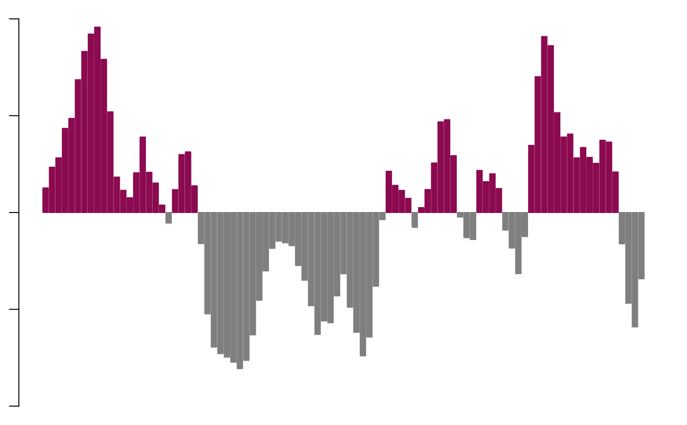

Plot A/B compartments bins
Usage
plotAB(
x,
chr = NULL,
what = "score",
main = "",
ylim = c(-1, 1),
unitarize = FALSE,
reverse = FALSE,
top.col = "deeppink4",
bot.col = "grey50",
with.ci = FALSE,
filter = TRUE,
filter.min.eigen = 0.02,
median.conf = FALSE
)Arguments
- x
The matrix obejct returned from getCompartments
- chr
Chromosome to subset to for plotting
- what
Which metadata column to plot
- main
Title for the plot
- ylim
Y-axis limits (default is -1 to 1)
- unitarize
Should the data be unitarized?
- reverse
Reverse the sign of the PC values?
- top.col
Top (pos. PC values) chromatin color to be plotted
- bot.col
Bottom (neg. PC values) chromatin color to be plotted
- with.ci
Whether to plot confidence intervals
- filter
Whether to filter eigenvalues close to zero (default: TRUE)
- filter.min.eigen
Minimum absolute eigenvalue to include in the plot
- median.conf
Plot the median confidence estimate across the chromosome?
Examples
library(GenomicRanges)
# Generate random genomic intervals of 1-1000 bp on chr1-22
# Modified from https://www.biostars.org/p/225520/
random_genomic_int <- data.frame(chr = rep("chr14", 100))
random_genomic_int$start <- apply(random_genomic_int, 1, function(x) {
round(runif(1, 0, getSeqLengths(getGenome("hg19"), chr = x)[[1]]), 0)
})
random_genomic_int$end <- random_genomic_int$start + runif(1, 1, 1000)
random_genomic_int$strand <- "*"
# Generate random counts
counts <- rnbinom(1000, 1.2, 0.4)
# Build random counts for 10 samples
count.mat <- matrix(sample(counts, nrow(random_genomic_int) * 10, replace = FALSE), ncol = 10)
colnames(count.mat) <- paste0("sample_", seq(1:10))
# Bin counts
bin.counts <- getBinMatrix(
count.mat,
makeGRangesFromDataFrame(random_genomic_int),
chr = "chr14",
genome = "hg19"
)
#> 1074 bins created...
#Calculate correlations
bin.cor.counts <- getCorMatrix(bin.counts)
#> Calculating correlations...
#> Done...
#Get A/B signal
absignal <- getABSignal(bin.cor.counts)
#> Calculating eigenvectors.
#> Smoothing eigenvector.
#> Done smoothing.
#Plot the A/B signal
par(mar=c(1,1,1,1))
par(mfrow=c(1,1))
plotAB(absignal, what = "pc")
